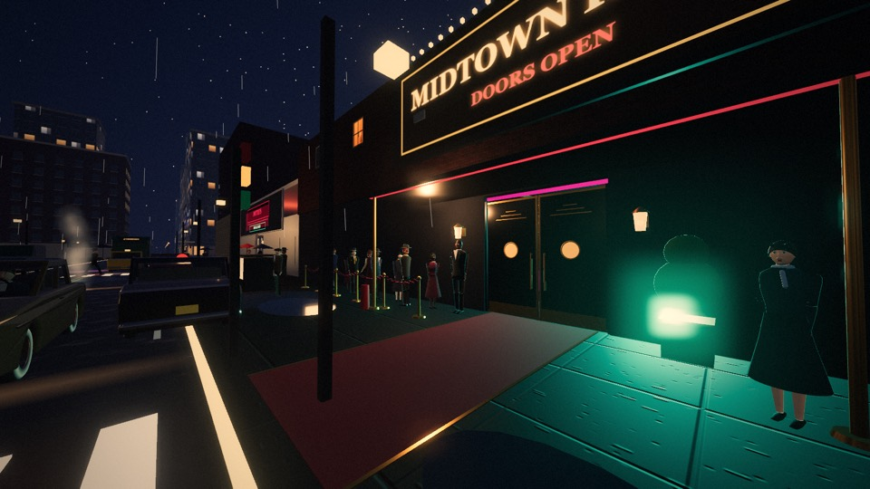
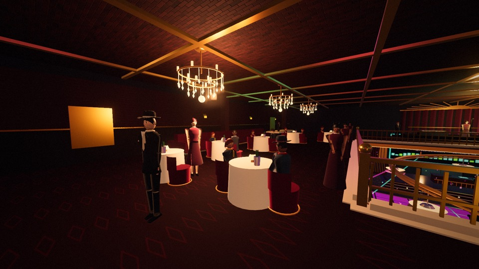
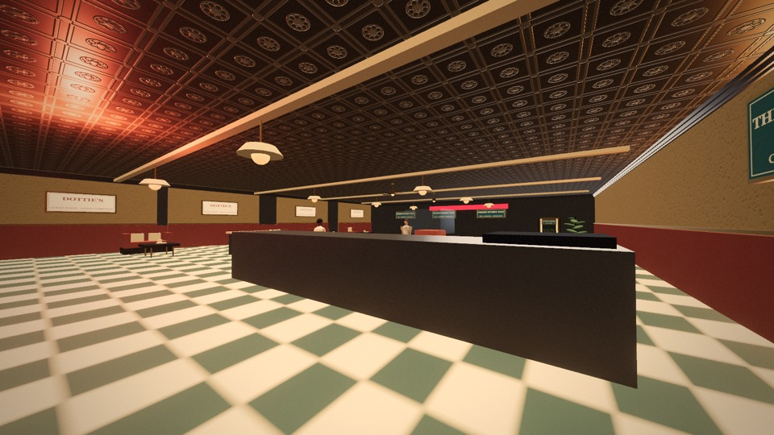
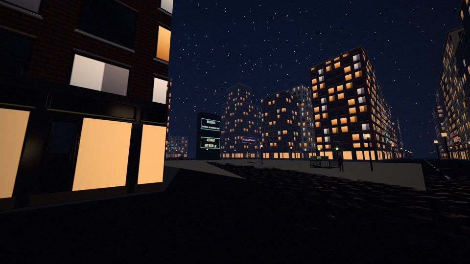
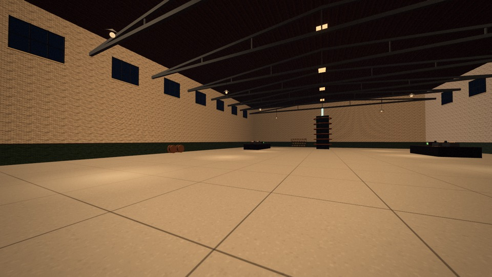
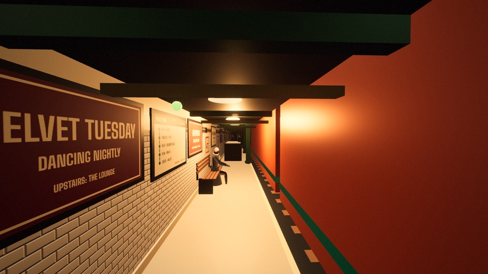
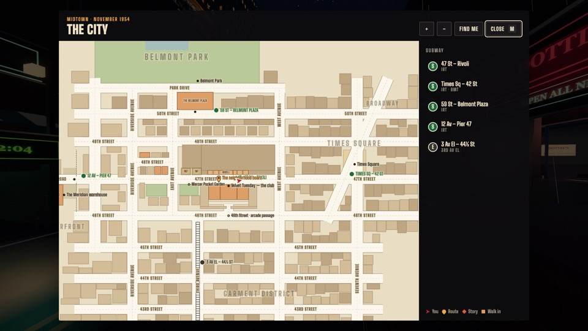
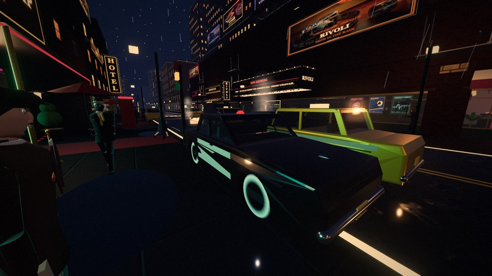
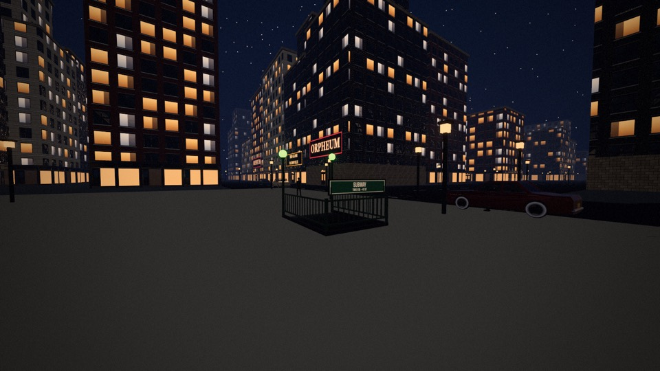

Tonight's stops
The night runs from doors at ten to the last uptown local. Follow the story, or ignore it and live in 1954 for a while.
-
Velvet Tuesday
The club on 47th Street: a lit glass dance floor, a mirrored onyx bar and REXA at the booth. Bruno decides who gets past the rope.

-
Upstairs in the lounge
Crystal chandeliers, white tablecloths and Velma singing under a gilt sunburst. Somebody in this room has seen your visor before.

-
Dottie's and 47th Street
Pie and coffee under a pressed-tin ceiling, a paid shift if your wallet's light, and a row of shops across the street to wander into.

-
Times Square
Tail a man in a grey hat crosstown through the lights. Stay close enough to follow and far enough that he never looks twice.

-
Pier 47
Slip past the watchmen into the Meridian warehouse, where somebody has been working out the Seam on a blackboard.

-
The uptown local
The last train. Be on the platform, or stay in 1954 for good. There are two endings.

The whole city is open
Walk from the club to Broadway, Belmont Park, the Garment District under the El and the North River piers: about a kilometre of 1954 Manhattan, and every door you can open.



How to play
- WASD
- Walk. Hold Shift to hurry.
- Mouse
- Look around. Click the screen to grab the mouse.
- E
- Talk, use, buy, sit, board the train.
- F
- Get in or out of a parked car.
- M
- Open the street map.
- L
- Your wallet, job and home.
- V
- Hold to see echoes, once the visor is tuned.
- Esc
- Pause, settings and saves.
On a phone or tablet, use the stick on the left to walk, drag to look, and tap Use to talk.
Your progress saves itself in this browser as you play. To move it to another computer, open the menu, choose Save & backup, and download a backup file.
If the game feels slow, choose a lower graphics setting in Settings. It reloads with the new setting and keeps your place.
What's new
-
Velvet Tuesday
Version 33, October 2026
The club rebuilt as a 1954 ballroom, doors that open on every building, a line with a bouncer, a real IRT platform, and far more lifelike people.
-
The map and the subway
Version 32, October 2026
A street map of the whole city, a minimap, subway rides between five stops, and new interiors from pressed-tin ceilings to the Meridian warehouse.
-
The 12:04
Version 31, October 2026
The story, the open city, drivable 1950s cars, a new look for the street and saves that keep up with you.
Doors are open.
Enter the night